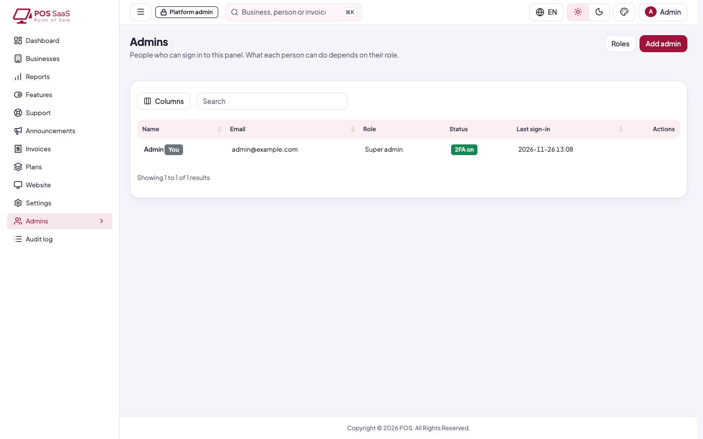

Admins
Admins are the people who can sign in to the platform panel. Each admin has one role, and the role decides what they can open.
Where to find it: sidebar, Admins. Needs admins.manage.


The list
Columns: name and email, role, two-factor state (2FA on or 2FA not set up), Must change password, and Last sign-in (or Never). Your own row is marked You.
Add an admin
- Click Add admin.
- Enter Name, Email and a Temporary password: at least 8 characters with letters and numbers.
- Choose a Role. You can only give a role that has no more access than you do. Only a Super admin can give the Super admin role.
- Click Save.
Share the password securely. The new admin must change it, and set up two-factor, at first sign-in. See Login and two-factor. The password is never written to the audit log.
You can also create an admin from the server with php artisan platform:make-admin (name the role with --role). See Login and two-factor.
Change a role
Pick a new role in the admin's row. You cannot change your own role, and only a Super admin can change another Super admin. There must always be at least one Super admin.
Reset two-factor
Reset 2FA clears the authenticator and recovery codes. The admin sets up two-factor again at their next sign-in. Use it when someone loses their phone and recovery codes.
- You cannot reset your own two-factor here. Use My account, which asks for a current code.
- Only a Super admin can reset another Super admin.
Remove an admin
Remove deletes the account. It cannot be undone.
- You cannot remove yourself.
- The last admin cannot be removed, and neither can the last Super admin.
- Only a Super admin can remove another Super admin.
The audit log keeps the removed admin's email.
Security emails
With Email admins about security events on (Settings, Security), all admins are emailed when an admin is added or removed, when two-factor is reset or locked after failed codes, and the admin concerned is emailed about a sign-in from a new address.